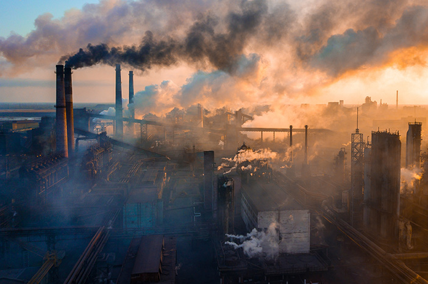

Pencemaran lingkungan adalah suatu kondisi di mana lingkungan tercemar oleh zat-zat berbahaya yang berasal dari aktivitas manusia maupun alam. Zat-zat ini dapat mencemari udara, air, tanah, bahkan suara dan cahaya. Pencemaran lingkungan terjadi ketika manusia membuang limbah atau sampah ke alam tanpa pengolahan yang tepat. Contohnya seperti asap kendaraan dan pabrik, pembuangan limbah ke sungai, dan penggunaan pestisida yang berlebihan di lahan pertanian.
Pencemaran lingkungan dapat dibagi menjadi beberapa jenis, yaitu pencemaran udara, pencemaran air, pencemaran tanah, pencemaran suara, dan pencemaran cahaya. Pencemaran udara biasanya berasal dari asap kendaraan bermotor, pembakaran sampah, dan emisi dari pabrik. Pencemaran air terjadi ketika limbah rumah tangga atau industri dibuang ke sungai, danau, atau laut. Sementara itu, pencemaran tanah bisa disebabkan oleh limbah plastik, bahan kimia, atau penggunaan pupuk dan pestisida yang berlebihan.
Dampak dari pencemaran lingkungan sangat luas dan merugikan. Bagi manusia, pencemaran dapat menyebabkan berbagai penyakit, seperti gangguan pernapasan, penyakit kulit, diare, dan gangguan saraf. Hewan dan tumbuhan juga terdampak, misalnya ikan yang mati karena air tercemar atau tumbuhan yang tidak bisa tumbuh di tanah yang rusak. Selain itu, pencemaran juga bisa mempercepat pemanasan global dan perubahan iklim yang menyebabkan bencana alam seperti banjir, kekeringan, dan tanah longsor.
Mengatasi pencemaran lingkungan bukan hanya tanggung jawab pemerintah, tetapi juga masyarakat. Kita dapat membantu menjaga lingkungan dengan cara-cara sederhana seperti membuang sampah pada tempatnya, mengurangi penggunaan plastik sekali pakai, mendaur ulang barang bekas, serta menanam pohon. Pemerintah perlu membuat kebijakan yang ketat terhadap pabrik atau industri agar mereka mengolah limbah dengan benar sebelum dibuang ke lingkungan.
Pendidikan dan kesadaran juga sangat penting dalam mengurangi pencemaran. Masyarakat harus diberi pemahaman tentang pentingnya menjaga lingkungan. Jika semua orang peduli dan berperan aktif, kita bisa menciptakan lingkungan yang bersih, sehat, dan layak untuk dihuni, baik untuk sekarang maupun generasi yang akan datang. Dengan menjaga lingkungan, kita juga menjaga masa depan bumi kita.